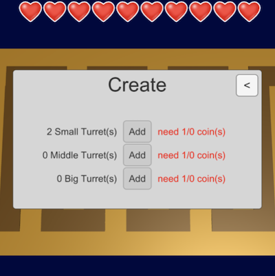

구현 기능

|
적 공격 기능 터렛은 사정 거리 안에 있는 적을 공격할 수 있습니다. 이렇게 해서 적이 목적지에 도달하기 전에 제압할 수 있습니다. |

|
적 생성 및 이동 기능 전투 시간이 되면 적이 생성된 후 목적지까지 이동합니다. 적이 목적지에 도달하면 라이프가 소모됩니다. |
|  |
터렛 구매 및 배치 기능 터렛을 새로 구매해서 배치할 수 있습니다. 그리고 터렛의 공격력도 강화할 수 있습니다. |
사회에 기여하려고 한 점
창의적인 게임을 제작해서 출시하므로 게임을 하면서 색다른 재미를 느낄 수 있습니다.
창의적인 게임을 제작해서 출시하므로 게임을 하면서 색다른 재미를 느낄 수 있습니다.
배경과 목적
요즘 사람들은 스마트폰을 굉장히 많이 사용하므로 창의적인 스마트폰 게임을 만들어서 사람들한테 서비스를 제공하기 위해, 게임 개발자가 될 것에 대비하기 위해 저만의 게임을 제작하게 되었습니다.
요즘 사람들은 스마트폰을 굉장히 많이 사용하므로 창의적인 스마트폰 게임을 만들어서 사람들한테 서비스를 제공하기 위해, 게임 개발자가 될 것에 대비하기 위해 저만의 게임을 제작하게 되었습니다.
배운 점
- Unity에서 Collision을 처리하는 법과, Collision과 Trigger의 차이를 알게 되었습니다.
- Unity에서 Coroutine과 IEnumerator로 주기적인 처리를 시작하는 법과 중지하는 법을 알게 되었습니다.
진행 절차
- Unity 3D 프로젝트를 생성하고 땅과 길을 구현하였습니다.
- 적이 등장하면 길을 따라서 이동하도록 하였습니다. 이것은 길 중간중간에 Collider를 배치해서, Collision이 발생할 때마다 목적지를 변경하는 방식으로 구현하였습니다.
- 터렛을 새로 생성하고 공격력을 업그레이드 할 수 있도록 UI를 구현하였습니다.
- 터렛을 새로 생성할 때는 생성할 위치를 터치해서 생성하도록 하였습니다. 터렛의 위치를 옮기는 것도 마찬가지로 터렛을 터치한 후 옮길 위치를 터치해서 옮기도록 하였습니다.
- 터렛의 사정 거리 안에 적이 들어오면 공격하도록 하였습니다.
- 60초마다 적들이 레벨업 후 등장하도록 하였습니다.
- 이렇게 해서 원하는 프로그램을 구현할 수 있었습니다.
역량 강화를 위해 가장 노력한 점
창의적인 3D 게임 제작
창의적인 3D 게임 제작
전체 구조

사용 기술
Unity
Unity
개발 환경
Unity 2020.1.9f1
Unity 2020.1.9f1